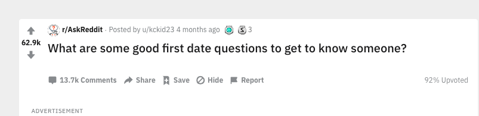
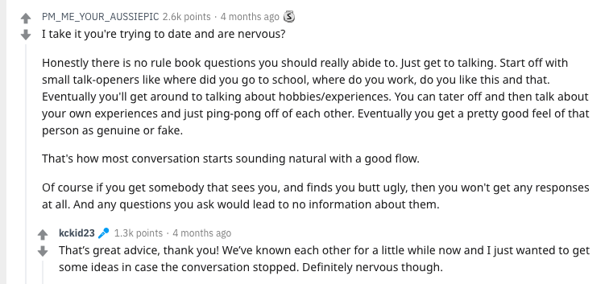
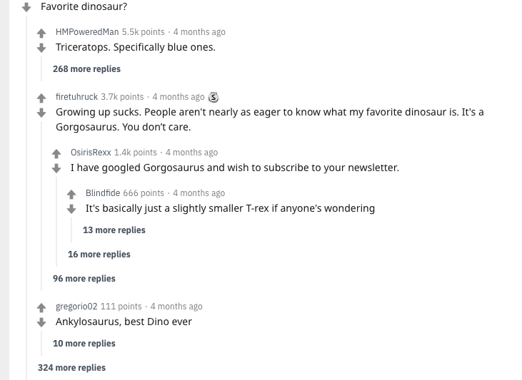

Benefits of being Anonymous
Some benfits with anonymity is having an online community where you feel safe and comfortable speaking about topics that are important to you. For example, you are able to connect with people who either are apart of the same community such as the LGBTQ+ community. Young teens or adults are able to communicate regarding issues they are facing in their everyday lives, such as the environments they live in and whether or not they're accepted. They can also connect with others in either the same country or internationally! This is a way for young teens to connect and build stronger relationships.


People on Reddit can ask each other different questions that can get advice to help them in their everyday life. They can also form communities. As of 2015, there were over 640,000 subreddit communities on Reddit! As an example, down below you can read a question that people can ask each other for help about dating! (very exciting)

 And here is another reddit conversation about dinosaurs! 
Reporting and Controvesial Opinions
Being anonymous can also benefit the ability to talk about controvesial opinions and also report crimes anonymously. This way you can talk about opinions that you feel you would generally get backlash for from people you know or from the community around you. Also, people afraid of coming forward for fear of political backlash, safety and pride can give vital information to news sources and police anonymously.